LS3D 4DS Field Manual
Everything the importer and exporter can do, and what every flag actually does in game — checked against real behavior and measured across every model shipped with Mafia, rather than inherited from older tools.
01Installation & preferences
Install the zip through Blender's add-on preferences. It asks for
Blender 5.2 or newer, registers under Import-Export, and adds an entry
for each of the four formats — models, animations, movement tracks and shadows
— under both File › Import and File › Export.
It can also install itself from a command prompt, which is worth knowing on a
machine that has nothing on it but Blender. The zip and the mbt.bat
beside it are a whole working copy, with nothing unpacked:
mbt.bat --install --textures "D:\Hry\Mafia Editovani\maps" --open "D:\models\tommy.4ds"One command: it finds the zip next to it, installs it into the newest Blender it
finds, switches it on, keeps the texture folder and saves the preferences — so the
add-on is there the next time Blender opens — and then opens the model, all in one
Blender. --install takes a zip by name as well, and with no name it
installs whatever copy the command came out of. Leaving --install off runs
the add-on straight out of the zip without installing anything, which is a way to try a
build without changing a thing. Nothing else is needed: Blender brings its own Python,
and the command finds Blender. Set MAFIA_BLENDER to a
blender.exe to pick the Blender rather than taking the newest.
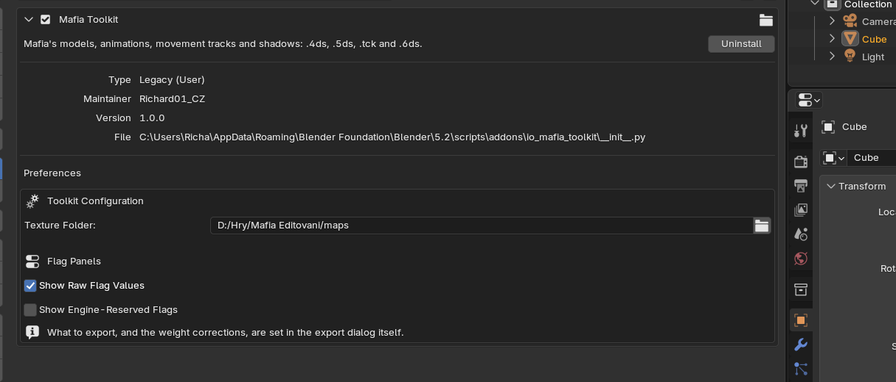
If the panels look unchanged after installing an update, check the version number in the add-on list. The add-on reloads its own modules as it starts, so an update takes effect without restarting Blender.
Preferences
| Setting | Default | What it does |
|---|---|---|
| Texture Folder | empty | The game's maps folder. The importer looks here for
textures and for the color key inside palette BMPs. Without it, models import
untextured and you get one warning saying so. |
| Always Export the Whole Scene | on | Ignores the selection when exporting. Exporting only what is selected silently omits everything else, which is rarely what you want for a game model. |
| Show Raw Flag Values | on | Shows the numeric field above each checkbox grid. The number and the checkboxes are the same value seen two ways — type a number and the toggles follow, click a toggle and the number follows. |
| Show Engine-Reserved Flags | off | Adds an Engine Internals group listing bits the engine owns. A bit your file actually has switched on is always shown regardless of this setting, so opening a model never hides what it contains. |
| Auto-fix >2 Bone Influences | off | On export, reduces any vertex with more than two influences to its two strongest and renormalizes. Off, such a vertex is an error. |
| Auto-fix Non-Parent-Child Weights | off | Resolves a vertex weighted to two unrelated bones by keeping the stronger. Off, it is an error. |
02Importing & exporting
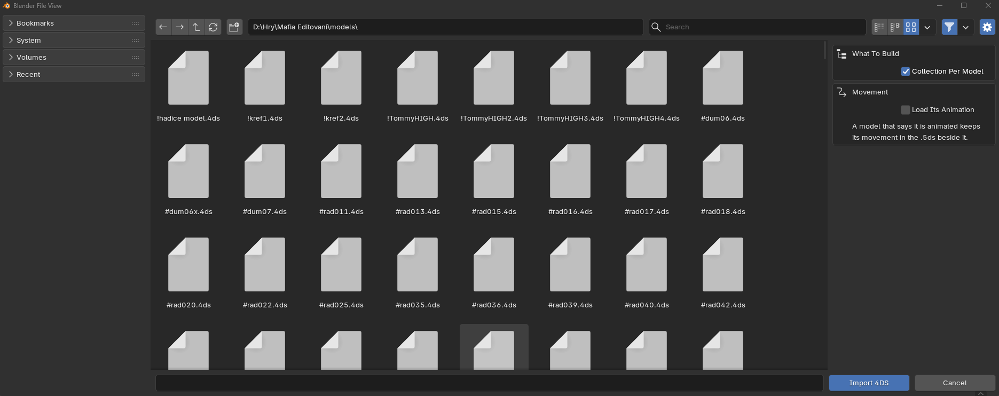
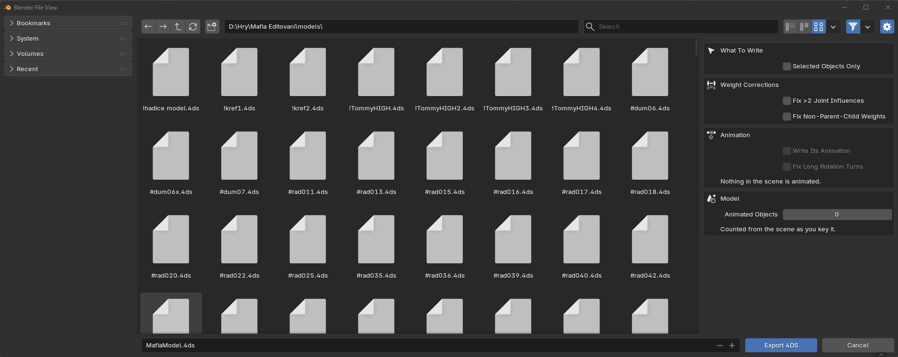
Both operations fill Blender's progress bar and set the busy cursor, and both print a staged log to the system console. The log opens as a summary dialog when anything needs your attention.
==============================================================
[MBT/4DS] Importing TommyHIGH.4ds
==============================================================
[MBT/4DS] Version 29, 8 material(s), 29 frame(s)
--- Materials ---
--- Frames ---
--- Post-processing ---
> Building armature (18 joint(s))
> Applying skinning (1 mesh(es))
> Applying morphs (3 mesh(es))
--- Viewport ---
[MBT/4DS] Import OK: TommyHIGH.4dsThe exporter assembles the entire document in memory and validates it before a single byte is written, then writes to a temporary file and moves it into place. A failed export leaves any existing file exactly as it was, with no partial output and no leftover temporary file.
The MBT CLI
The same import and export can be driven from a command line — for converting a
folder of files, for putting the add-on in a script, or for looking at one model
quickly. mbt.bat, which sits beside the add-on's own code and so goes
wherever the add-on goes, finds Blender itself and runs it there. Nothing but Blender
is needed. Paths may be full or relative to where you are standing; they are made
absolute before Blender is started.
mbt --install
mbt --textures "D:\Hry\Mafia Editovani\maps" --open "D:\models\Tommy.4ds" --check
mbt --open tommy.4ds --export out.4ds --option selection_only=True
mbt --open tommy.4ds --open walk.5ds --save tommy.blend
mbt --open tommy.4ds --gui--open reads the kind from the name, so a model, an animation, a
movement track and a shadow all go the same way; repeat it to load an animation onto
its model. --export writes the scene back out, --save keeps it
as a .blend, --check and --check-animation run the
export checks without writing anything, and --gui leaves Blender open with
the result. --option name=value passes a setting to the import or export
dialog under the name it carries there, and a name no dialog has is refused rather than
quietly ignored. The exit code is 0 when everything asked for was done, 1 when a step
was refused and 2 when the command made no sense, so a batch script can tell.
mbt --help lists the lot.
Animated objects
The Animated Objects count is written into the file header. The engine reads it to
decide whether to look for a matching .5DS animation file next to the model. It
lives in the 4DS Model tab of the viewport sidebar, together with Check 4DS Scene,
the Joint Size slider and the switch that shows the joints' influence boxes: they belong
to the model as a whole, or to the scene, rather than to whichever object is selected. Joint Size
is how big the joint markers are drawn, multiplying the marker a joint's own 4DS scale sets;
nothing about it is written.
03Frame types
Every object in a 4DS file is a frame: a name, a transform, a parent, and a payload whose shape depends on the frame's type. The add-on stores the type on the Blender object and colors the viewport by it.
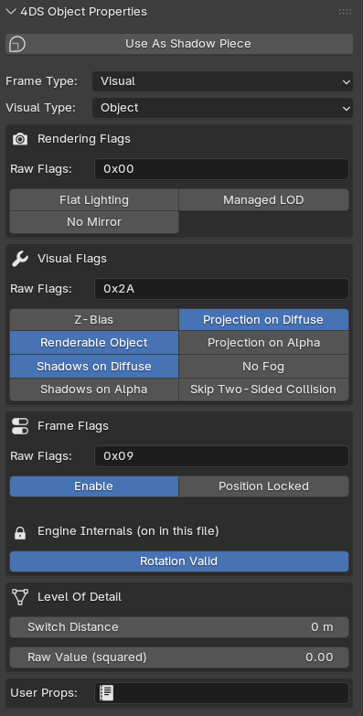
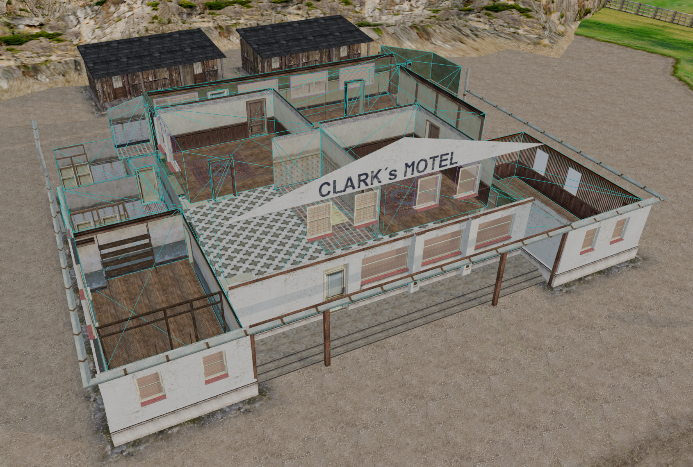
| Type | Blender object | Notes |
|---|---|---|
| Visual | Mesh or empty | Anything you can see. Carries a visual type that decides its payload. |
| Sector | Mesh | A convex room volume. Portals are sector frames parented to a sector. |
| Dummy | Cube empty | A named box — mount points, spawn markers, gameplay anchors. |
| Target | Plain-axes empty | A point that links to other frames by name. |
| Joint | Armature bone | A skeleton bone. Imported into a single armature. |
| Light | Cone empty | A light the engine draws with. Carries its own falloff band and cone angles. |
| Emitor | Mesh | A particle emitter. The mesh it carries is the particle, not the emitter — see below. |
| Camera · User · Model · Volume · Scene · Shadow · Landscape | Plain-axes empty | Carry nothing but a name, a place and a parent. Kept out of the Add menu for that reason: there is nothing to author. |
| Sound · Area | — | Skipped on import and never written. The game builds both itself and reads nothing of one from a file. |
| Occluder | Mesh | A convex volume that hides whatever is behind it. |
Visual types
| Visual type | Payload |
|---|---|
| Object | Plain geometry with LODs. The common case. |
| Single Mesh | Geometry plus a skin block. One per file. |
| Single Morph | Skin block plus morph targets. |
| Billboard | Geometry that turns to face the camera. |
| Morph | Geometry plus morph targets, no skinning. |
| Lens Flare | A list of glow sprites. Imported as a small sphere empty. |
| Mirror | A reflection plane with a view box. |
Emitors
An emitor frame holds one thing in the file: the mesh of a single particle, stored in the same block a visual keeps its geometry in. Every number that decides how the particles behave — how often one is born, how long it lives, how fast and which way it goes, how it grows and what color it fades to — lives in the engine, not in the model, and is set by the code that places the emitter.
What the engine does with one, when it is switched on:
- It counts time and spawns a particle every spawn period, which is 100 ms give or take 60 until something says otherwise.
- Each particle is a copy of the emitor's own mesh, dropped at the emitor's place with a little random scatter, and it lives about 1.8 seconds before it goes.
- The emitor has to sit under a sector. It walks up its parents looking for one, and with none above it nothing is ever spawned.
- It keeps up to 260 particles alive at once. Given a count of texture frames instead, it fires that many and switches itself off — a burst rather than a fountain.
- Each particle carries a start and end size, a start and end color, a speed, a weight that pulls it down, and a spin; it is drawn plain or added to what is behind it.
Only the scene ticks emitors, and it only ticks the ones handed to
it. A 4DS loaded as a model — a car, a prop, anything a
mission places as an object — gives its frames to that model,
which never puts an emitor on the tick list: it loads, it sits there,
and nothing is ever spawned. A 4DS loaded into a sector, which
is how a mission's own scene.4ds arrives, gives its frames
to the scene, and the scene puts every emitor among them on the tick
list at once. So an emitor belongs in the level, not in a model you
place in it.
The mission's effects.bin has nothing to do with any of
this. The smoke, sparks and fire you see in the game come from
tables\effects.tbl and that file, through a particle system
of the game's own — it never touches an emitor frame. An emitor
runs on the engine's defaults, and the only way to change them is code
that takes hold of the frame and sets them.
No model the game ships contains one, so this is untried ground. The add-on reads and writes the frame and its particle mesh exactly, and adds nothing of its own.
Viewport colors
Objects are tinted by role. The colors only appear under Solid shading with Color set to Object — in Material or Rendered mode they are invisible, which is why instance labels are drawn as overlay text instead.
04Objects & LODs
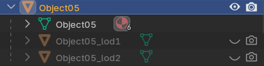
_lod1 and _lod2 under the mesh they belong to.Levels of detail are named by suffix: the base object, then name_lod1,
name_lod2 and so on. Matching is anchored to the end of the name, so an
object legitimately called car_lodge is not mistaken for a LOD. A gap in the
numbering ends the chain and warns, rather than silently renumbering — renumbering would
change which distance each level switches at.
The engine compares a squared camera distance against the stored value without ever
taking a square root, so the number in the file is distance × distance.
Sam's eyes hold 0.484, which is 70 cm; the zeppelin in the harbour
scene holds 789823, which is 889 m, not 790 km. This build shows
you meters and squares it on the way out. The raw value is available behind
Show Raw Flag Values.
Faces whose corners meet
63 of the game's models hold 779 faces whose three corners are not three distinct vertices - a face covering no area. Blender cannot hold one, so the import gives the repeated corner a copy of the vertex at the same spot and the export writes the copy as the vertex it repeats, so the face comes back as it was.
A copy is written that way only while the two really are one vertex twice: as well as
the same spot, normal and UV, they must carry the same weights and be put in the same
place by every morph target. A corner weighted to another joint, or lifted away by a
target, parts from its twin as soon as the model moves - a face flat at rest can open
when a joint turns - so it is written as a vertex of its own. One model in the game,
4old071, ends a mesh on a real vertex that matches its twin in all of that
and is merged anyway; it comes back one vertex shorter with an already-flat face written
as a repeated corner, and nothing it draws changes in any pose.
User properties
Free-form text stored on the frame, used by mission scripts. The format allows 255 bytes; longer text is clipped on export with a warning. Strings are encoded as Windows-1250.
05Instances
A 4DS frame can say “my geometry is the geometry of frame N” instead of carrying its own copy. That is an instance: a full frame with its own name, transform, parent and flags, but no mesh data of its own. A street of identical lamp posts stores one mesh and many cheap frames.
In Blender that maps onto linked duplicates — objects sharing one mesh datablock. The exporter turns any group of objects sharing a mesh into one real frame plus instance references to it.
Telling them apart
- Viewport tags. Masters are labeled
master (N copies), copiescopy of <name>, drawn as overlay text so they are visible in every shading mode. The Instance Tags scene setting chooses Off, Selected (the default — labels the selection and its counterparts) or All. - The object panel gains an Instancing block naming the counterpart in both directions.
- Object color fades a copy toward gray while keeping its type's hue.
An instance in the file points at a single geometry block, so a frame that is instanced cannot also have its own LOD chain in the way a normal object does. If you need per-copy LODs, use separate meshes rather than linked duplicates.
06Materials
A material is one 32-bit flag word plus colors, opacity and up to three texture names. Three parts of that word are not flags at all — they are small numbers packed into bit ranges, and this build shows them as the fields they are.
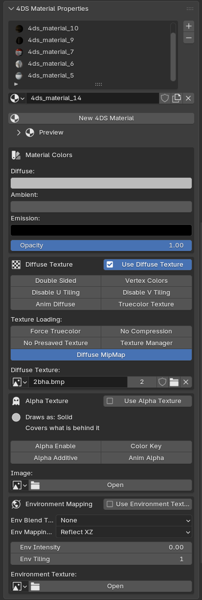
The three packed fields
| Field | Values |
|---|---|
| Env Tiling | How many times the environment texture repeats across the surface. This is also why older tools showed an “Unlit” checkbox that never did anything — it was part of this number, not a switch. |
| Env Blend Type | None · Blend by Amount · Blend by Alpha · Multiply · Multiply Twice · Add |
| Env Mapping Mode | Reflect XZ · Reflect XY · Planar XY · Planar ZY · Planar XZ · Dummy Frame |
Each option's tooltip also names the game's own letters, which differ by a Y/Z swap. Reflect XY (Z as the pole) is the upright sphere map, and the usual choice for chrome and glass. The three planar modes project from world position and stay put as the object moves.
Dummy Frame is real but narrow: it works on billboards only. On any other visual type the setting is simply ignored.
Material flags
| Name | What it does |
|---|---|
| Texture Manager | Load through the engine's texture manager. Unused in the original game. |
| Alpha Enable | Enable transparency. Without a separate alpha texture the engine looks for a diffuse texture whose name ends in +. |
| Disable U Tiling | Clamp texture addressing horizontally. |
| Disable V Tiling | Clamp texture addressing vertically. |
| Use Diffuse Texture | Off omits the diffuse texture name from the file. |
| Use Environment Texture | Enables reflection and shine. |
| Force Truecolor | Always load at full color depth, ignoring the memory-saving setting. |
| No Compression | Keep the texture uncompressed even when compression is enabled. |
| No Presaved Texture | Read the original file instead of the pre-converted cache. |
| Diffuse MipMap | Mipmaps for the diffuse texture; the environment texture gets them either way. On a color-keyed material it also changes how the material is drawn: the texture is loaded with a whole alpha channel rather than a single bit and blended, so keyed edges soften with distance rather than being cut at every size. |
| Truecolor Texture | Load at full color depth rather than through a palette. |
| Anim Alpha | Animate the alpha texture. Frames numbered with a 001 suffix. |
| Anim Diffuse | Animate the diffuse texture. Frames numbered with a 01 suffix. Decided before the material object exists — the loader builds a different class for it. |
| Vertex Colors | Tint lighting with the material's ambient, diffuse and emission colors. |
| Double Sided | Disable backface culling. |
| Color Key | Treat the texture's key color as fully transparent. |
| Use Alpha Texture | Uses a second texture for transparency. Color Key, Truecolor Texture and Additive each replace it, so those take priority. |
| Alpha Additive | Alpha blending with alpha test. Black becomes fully transparent — fire, glass, light glows. |
07How settings work
Four panels of switches sit on every object: Culling, Rendering, Logic, and — on sectors and portals — their own. Here is what to expect from them.
Most of what these fields can hold is not a setting at all. Alongside the switches you set, the format keeps bookkeeping the game maintains for itself, which it recalculates every time a model loads. Changing those does nothing.
So the panels show you the switches that matter and keep the rest out of the way:
| What you see | Meaning |
|---|---|
| Checkboxes | Real settings. Ticking one changes how the object looks or behaves in game. |
| Engine Internals | A collapsed group of switches the game manages itself. Hidden unless you turn on Show Engine-Reserved Flags — except that any your file already has switched on are always shown, so nothing about your model is hidden from you. |
| Raw Value | The number behind the checkboxes, editable directly. Type a number and the checkboxes follow; tick a checkbox and the number follows. Hide it with Show Raw Flag Values. |
The checkboxes and the raw value are one and the same setting seen two ways. Whatever a panel chooses to show, every switch in your file is saved and written back exactly as it was read — including ones this add-on has never heard of.
08Culling
Present on every object, and on joints. Two settings.
| Setting | What it does |
|---|---|
| Enable | Whether the object exists in game at all. Off removes it from drawing, collision, lighting and sound, and hides everything parented under it. Leave this on for anything you want to see. |
| Position Locked | Stops the game moving the object once the level is running. Nothing in Mafia uses this, so leave it off unless you have a reason. |
The rest of this panel is bookkeeping the game rebuilds when the model loads. One of them is the switch older tools labeled “Cast Shadow”. That name was not invented — the original authoring tool really did write its cast-shadows setting here, and you can still see it cleared on interior walls, ceilings and door frames in a few mission scenes. But the game turns the switch on again as it loads the model, so it changes nothing today. Shadows are controlled from the Logic panel.
09Rendering
How the object is lit and how its detail levels are chosen.
| Setting | What it does |
|---|---|
| Flat Lighting | Lights the object with one even tone instead of shading it across the surface. Good for small props that should not catch highlights as you walk past. This is the switch older tools called “No Shading” — the object is still lit, just evenly. |
| No Mirror | Keeps the object out of mirror reflections. When the game works out what a mirror can see, anything with this switch is left out. Written as the user property NO_MIRROR in the original models. |
| Managed LOD | Picks the level of detail from which textures are loaded rather than from camera distance. Unused in the original game. |
The remaining switches here do nothing, or are managed by the game. One of them makes an object ignore its own position and rotation — older tools called it “Hide Mesh”, because that is what it looked like. It is in the Engine Internals group so you cannot set it by accident.
10Logic
Shadows, projected textures, fog and decals. Every switch here is real.
| Setting | What it does |
|---|---|
| Z-Bias | Draws the object just in front of whatever is underneath it, so posters, road markings and stains do not flicker against the wall or floor they sit on. Turn this on for any decal. |
| Renderable Object | Marks the visual as one of the engine’s object family — every type except a mirror, lens flares included even though they carry no mesh. With it off the object is left out of every mirror’s reflection and skipped when detail levels are pre-built; ordinary drawing is not affected. The exporter sets it to match the object’s type, so it needs no attention. |
| Shadows on Diffuse | The object receives shadows on its solid surfaces. Off means it takes no shadow at all. |
| Shadows on Alpha | Also receives shadows on its see-through parts — anything using a color key, alpha blending or an alpha texture. Needs Shadows on Diffuse as well. |
| Projection on Diffuse | The object receives projected textures — headlights, bullet holes, projected shadows — on its solid surfaces. |
| Projection on Alpha | Also receives them on its see-through parts. Needs Projection on Diffuse as well. |
| No Fog | Keeps full color at any distance instead of fading into the sector’s fog. Useful for skyboxes and anything that should not haze out. |
| Skip Two-Sided Collision | Leaves the object out of collision queries tagged two-sided. The game never tags one, so on its own this changes nothing. It is not the setting that makes collision accept back faces — that is a separate option on the query itself |
The Diffuse switch turns the effect on; the Alpha switch extends it to the object’s see-through parts. Alpha on its own does nothing — tick Diffuse first. Original models use Diffuse alone, so that is the safe default.
11Sectors & portals
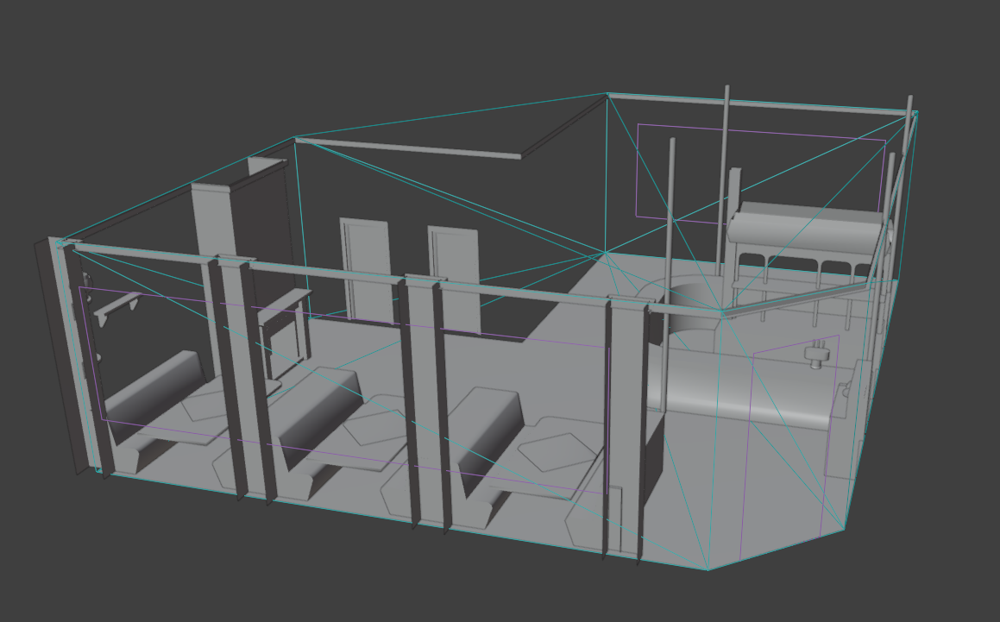
A sector is a room volume; portals are the openings between them. The game walks from the camera's sector through visible portals to decide what to draw.
The mesh is stored as a convex hull: each face becomes a plane, and the game answers “is this point inside?” by requiring the point to be on the positive side of every one of them. For a concave mesh that intersection is smaller than the room, so the dented-in part reads as outside and the game picks the wrong sector for fog, reverb and visibility while you stand there.
Normals must face inward. The add-on warns rather than blocking, because the game itself ships a few sectors that are very slightly off and copes with them fine.
Portals
- A portal is a sector-typed mesh named
<sector>_portalN, parented to its sector. - Between 3 and 8 corners. The upper limit is real: the outline is stored in a fixed slot of eight corners, so a ninth does not fit.
- The plane is always recomputed from the current geometry on export, so moving or reshaping a portal stays correct.
| Portal setting | What it does |
|---|---|
| Enable | The opening is open and can be seen through. Off seals it like a solid wall and the sector beyond stops being drawn. Enabling one side also enables the matching portal on the other. |
| View Distance | How far the camera can get before the view through the opening is cut back. Past it the sector behind counts as barely visible. Zero means no limit. The panel shows meters; the file stores the square of that number, the same way LOD switch distances are stored. |
| Far Cull | Past the View Distance, stop looking through the opening altogether — the sector behind is not drawn at all. Without it the game still looks through, it just treats what is behind as barely visible. |
Two more portal boxes are shown only with Show engine-managed flags on. They are the game's own scratch state and nothing you set survives a load. One of them is worth recognising: a fifth of the original portals carry an unused bit that nothing ever reads. The add-on keeps it exactly as it found it, so a re-exported scene stays byte-identical.
Sectors, portals and occluders are written as bare hulls — there are no face groups in them for a material to attach to. Anything left in their material slots is ignored on export and never enters the model's material table; the 4DS Material panel says so and offers a button to clear the slots.
Sector settings
| Sector setting | What it does |
|---|---|
| Occluder | Use the sector's own shape to hide whatever is behind it, the way a dedicated occluder object would. Saves drawing a building interior you cannot see past. |
| Skip Nested Objects When Barely Visible | Cuts the sector back while you are only glimpsing it — when the opening you are looking through covers less than about ten pixels each way on screen, or when you are past that portal's View Distance and it has no Far Cull. In that state only the objects sitting directly in the sector are drawn; anything parented under them is skipped. Meant for cluttered interiors seen through a far-off window. |
| Echo Settings Pending | Says the sector's echo settings have not been applied yet. The game applies them when you walk in and switches this off again. Every sector in the original models ships with it on, so leave it that way. |
Group Mask
The sector's second value is not a set of switches — it decides which sectors a headlight or a projected shadow can spill into. Two sectors must share a bit for anything projected in one to reach the other. It is zero throughout the original game, which keeps projections inside their own sector.
12Occluders
An occluder is a closed convex volume that hides geometry behind it.
Each frame the engine tags every face as front- or back-facing against the camera, then extrudes the silhouette edges into side planes. That construction only describes the real shadow volume when the silhouette is a single closed loop — which is what convexity guarantees. A concave occluder produces several loops, and the planes built from them enclose more than the true shadow, so it over-occludes: geometry that should be visible gets culled.
Normals should face outward. The plane count is capped at 32 per frame, so a dense occluder silently loses planes.
13Dummies & targets
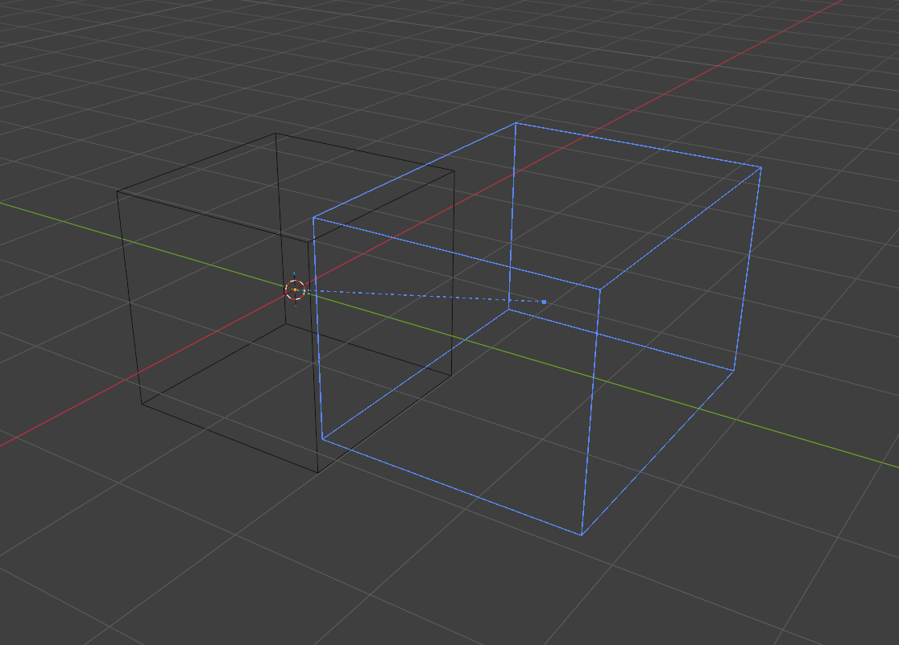
Dummies are cube empties with a name and a bounding box — mount points for wheels and weapons, spawn markers, script anchors. The box is stored explicitly, so resizing the empty changes what is written. The outline is drawn blue, red once the dummy is picked, with six handles to drag its faces and a dot at its middle — the point the panel’s Center numbers move. A box that does not sit on its empty also has a dashed line from that dot back to the empty, so in a crowded scene it is clear which box belongs to which dummy; it follows the viewport’s Relationship Lines overlay, as Blender’s own parent lines do.
Targets are plain-axes empties that hold a list of links to other frames by name, including links to individual bones. A link whose destination is not being exported is dropped with a warning naming it, rather than silently producing a dangling reference.
14Billboards
Geometry that turns to face the camera. Two settings:
- Rotation Mode — face the camera on all axes, or rotate around one fixed axis.
- Rotation Axis — X, Z or Y, used by single-axis mode.
Billboards are also the only visual type where the material's Dummy Frame environment mapping does anything, since they are the only type that passes a reference dummy to the engine.
15Mirrors
A mirror is a reflection plane plus a view box — a cube empty named
<mirror>_viewbox, parented directly to the mirror, with no children of
its own. The exporter checks all of that and names whichever rule is broken.
The engine reads the stored matrix's basis vectors as the box's half-extents, and Blender draws a cube empty at scale × display size, so the export folds the display size in: resizing the empty either way moves the box. An imported view box arrives with its display size at 1.0, so the numbers in the file are what you see.
The game never looks at a mirror's faces to work out which way it points. It takes the object's local Y axis, reflects the world across the plane square to it, and uses the mesh only to say where that reflection is painted. So the surface has to lie in the local XZ plane facing +Y, and the view box belongs out in front along the same axis, its near face on the mirror. Turn the object itself to aim the finished mirror; leave the mesh square to Y. The Mirror panel says which way the surface currently points, and the export reports a mirror that is turned away or one whose view box sits behind it.
Reflection Range is a real draw distance: past it the mirror stops reflecting and draws as flat color. The default is 100.
16Lens flares
A lens flare imports as a small sphere empty so it can be selected and moved without geometry. It holds an ordered list of elements, each one a material drawn as a sprite plus an Axis Offset saying where on the flare it sits. Add, remove and reorder them in the Lens Flare panel.
One element makes a lamp. It is drawn at the object's own position, grows as you get close, fades out with distance and disappears past its range. Axis Offset does nothing here, so the panel grays it out.
Two or more make a directional flare, the kind the sun has. The object's position stops being a place and is read as a direction, and the elements are spread along the line running from the middle of the screen out towards it.
Axis Offset
The value is not a screen coordinate. Each element is placed at a point in the world and that point is projected like anything else:
P = camera + 2 m × camera_forward + offset × light_direction
The light direction is the flare object's own location vector, normalized — which is why a multi-element flare ignores how far out you put the object and reads only which way its X Y Z points from the world origin.
The reference point sits on the camera axis, so offset 0 projects to the middle
of the screen. Raising the offset walks the point along the light direction, and its
projection approaches the vanishing point of that direction — the light's own screen
position — without ever arriving. Writing θ for the angle between
the camera axis and the light, the fraction of the way there is:
offset × cos θ / (2 + offset × cos θ)
| Axis Offset | Where it lands (light roughly ahead) |
|---|---|
| 0 | Middle of the screen. |
| 2 | Halfway between the middle and the light. |
| 6 | Three quarters of the way. |
| 18 | 90% — visibly on the light. |
| 50 | 96%. Anything past this buys almost nothing. |
| −0.6 | 43% of the way out on the opposite side of the middle. |
| −1.1 | Opposite side, slightly further out than the light itself. |
| −2 or lower | Behind the camera. The element is dropped. |
Negative values are the useful half: the ghosts of a flare live between roughly
−2 and 0, spread out so they trail across the screen as the camera turns. That is
exactly what the original sun flare in Emeth.4ds does — eight elements
between −1.1 and 0.3, with its head element at 0.
Order matters. The first element is the head: the game draws it larger than the rest and at full brightness, and dims the others the further the flare drifts off-axis. Use the arrows beside the list to move an element.
Every element needs a material. One left empty is refused on export rather than written, because the file stores a material number and an empty one reads off the front of the model's material list. Flare materials do not need to be on any mesh — they are collected from the list itself.
17Projectors
A projector paints a texture onto whatever geometry falls inside its volume — a headlight on the road, a lamp pool on a wall, a tyre track on the ground. It carries no mesh of its own: the game works out as it draws which surfaces the volume overlaps, maps the texture across it and paints them.
Four bytes and a transform is the whole of what a file keeps: whether the volume goes straight through or spreads, one byte of mode, and the material number. Everything about the shape follows from the frame's own transform.
The volume
Two units across and one unit deep along local +Y, carried by the frame's transform — so the object's scale is how big the projection is. Nothing about the volume itself is stored.
| Shape | The volume |
|---|---|
| Orthographic | A box, the same width all the way through, so the projection is one size however far it reaches. |
| Perspective | The pyramid inscribed in that box, spreading from the frame's own point, so the projection grows with distance. |
Depth Falloff and Blend Mode
The mode byte carries both, and the six values it can hold are the six pairings of the two. A byte outside those six is read as Alpha Blend with no depth term.
| Depth Falloff | Across the depth of the volume |
|---|---|
| Constant | Full strength throughout. No depth term at all. |
| Linear | Full at the near face, fading to nothing at the far one. A surface sitting exactly at the far face takes no paint at all: that is the falloff reaching zero, not a fault. |
| Triangular | Nothing at either face, full at mid-depth. |
| Blend Mode | How the paint meets the surface |
|---|---|
| Additive | Adds to the surface, so it can only brighten and black adds nothing. For light: headlights, lamp pools, glows. |
| Alpha Blend | Draws over the surface, hiding it where the texture is opaque. For marks: tyre tracks, scratches, decals. |
The material, and what reaches the paint
A projector needs a material and paints its diffuse texture and nothing else. The format keeps a material number and zero is not one — the game subtracts one and reads whatever that lands on — so the export refuses a projector with no material, and warns about one whose material writes no diffuse texture, since it would draw nothing.
What the texture itself carries does reach the paint: the transparency a material keeps in a second image, where it has one, and the color key, which cuts its own color out. A color key, a truecolor texture carrying its own alpha, and an additive material each settle transparency on their own, and the second image is left out — the same three the material itself leaves it out for. An animated texture cycles as it does anywhere else.
What does not reach it: the material's colors, its opacity, its environment map and its switches. None of them touch a projector in game. The color a projector is tinted with is its own, and the format has nowhere to keep it, so it is always full strength.
A projector has no mesh and so no material slot, and never appears in Blender's Material tab. It is edited from Material Settings inside the projector's own panel, and the + beside the picker makes one set up the way the game reads it.
What the viewport shows
The paint is drawn onto the surfaces the volume covers, with the volume shape, the mapping, the falloff and the blend the mode asks for, stopping at the first thing in the way. Project Textures in the 4DS Model tab turns it off; it is drawing only, and changes nothing that is written.
Blender composites an overlay over the scene rather than adding into it, so an Additive projector cannot brighten the surface it lands on. It is drawn with its brightness carried in its opacity instead: black shows nothing, the brightest paint shows fully, and the falloff fades it away rather than blackening it. The shape, the texture, the falloff and where it stops are exact; only the brightening is not, which shows on a light surface more than a dark one. Alpha Blend is exact.
18Armatures & skinning
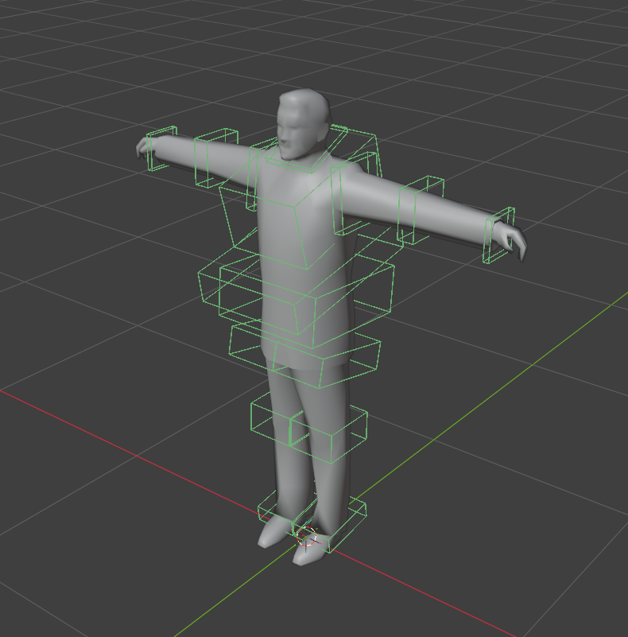
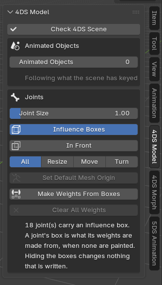
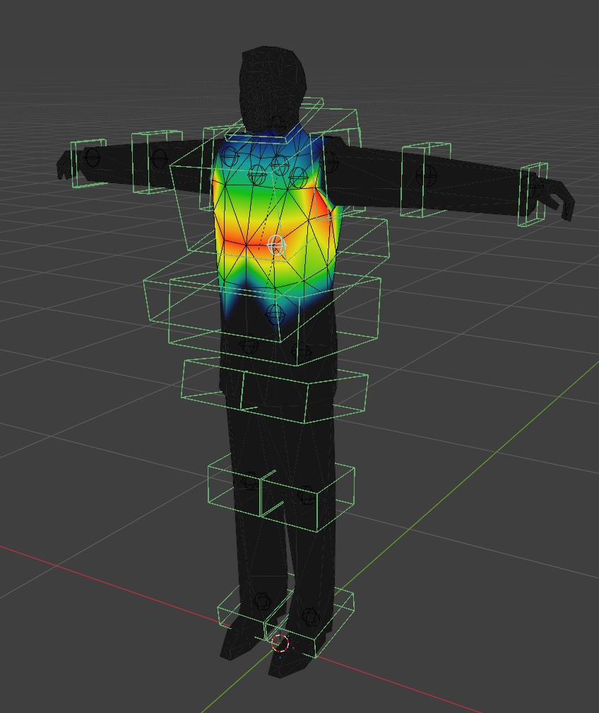
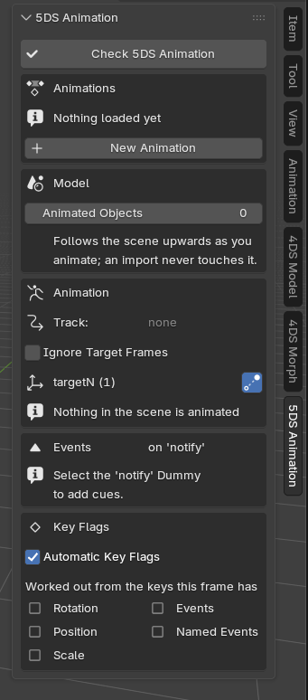
A file supports one skinned mesh. The mesh's visual type is Single Mesh, or Single Morph if it also carries morph targets. Binding by parenting or by an Armature modifier both work.
The mesh frame is where the armature stands
The skinned mesh's frame holds the mesh's vertices, the joints at the top of the skeleton hang from it, and the game's character animations move and turn the body by it. No bone stands for it: the armature stands where it is, and keeps that place in its Delta Transform, shown in the armature's 4DS panel as Mesh Frame. The armature's own location, rotation and scale stay at nothing, for the body's movement - so a crouch or a roll turns the body about the frame, as the game does. The mesh object's origin makes no difference: its vertices are brought into the frame's terms wherever it sits.
A vertex shared between a top joint and the mesh frame keeps the mesh's share in the vertex group the Armature modifier names as its Vertex Group, with Invert on, which holds it back from the joint by that much. A vertex with no weight at all follows the mesh.
Joints not below the mesh are an armature of their own at the model's origin. Where the
mesh hangs from one of them - Bone01 in I04Delnik01+ - the character's
armature hangs on that joint.
A character's mesh is called base
For the game's own animations to work on a character, its skinned mesh has to be called base. The animations move the body - a crouch, a side roll - through the frame named base, and turn only the joints; 2,563 of them carry a track for it, and the game finds that frame by its exact name. A mesh called anything else is not moved by them: the limbs still bend, but the body stays where it stood, so a crouch never lowers it and a roll never turns it over.
The name is not all. An animation sets the frame's place outright rather than adding to it, so the frame has to rest where Tommy's does, at hip height - about 1.08 m up and 3.6 cm forward, where the skeleton preset stands its armature. A frame resting at the feet is carried to hip height by every animation, and the whole body with it. Set Default Mesh Origin, in the 4DS Model sidebar tab, stands a character's armature at the default mesh origin - found from the character's own skeleton, where Tommy's stands from his - without moving a bone or the mesh, with either selected. One already within 10 cm of that place is left where it is, as every character the game ships is. A character not Tommy's size stands at its own hip height, and the game's animations lift or lower it by the difference; the export warns about a frame more than 10 cm from Tommy's.
The export warns about a Single Mesh or Single Morph called anything else. It does not refuse one: of the game's 322 skinned meshes, 313 are called base, and the other nine are birds called Base, dogs called a and three custom characters. The birds and dogs have animations of their own, keyed to their own names.
Weight rules
The format allows at most two influences per vertex, and those two must be a direct parent-child pair, with weights totalling 1.0. Each rule is an error naming the object and the vertex, unless the matching auto-fix is enabled in preferences — then it is repaired and summarized as a warning.
Joint scale
Joints carry a scale the engine folds into the bind matrices. It is editable in the joint panel as a plain value with no visual effect in Blender, and pose-bone scale is locked so the two cannot disagree.
Joint limit
The game gathers at most 64 joints below a skinned mesh, so the exporter refuses more. The game's own models use 25 at most.
Influence boxes
Every joint stores sixteen numbers describing its area of influence: a box across the limb that the skin weights were made from when the model was exported. In Blender it lives on the joint, as sixteen numbers on its pose bone, and is drawn in green over the bone it belongs to; nothing stands in the scene for it. Its local +Y is the axis the weight runs along. The game plays the weights and never reads the box.
A joint with weights painted exports them as they are. A joint with none has them made from its box, as the game's own exporter made them: a vertex inside the box is shared with the joint's parent by where it sits along the box's Y, from none of it the joint's at the -Y face to all of it at the +Y face, and the mesh ahead of the box, as far as it runs unbroken, is the joint's alone. Joints that are no kin of each other - a left leg and a right, a leg and the spine - meet where the mesh is nearer the one: inside overlapping boxes, the box whose middle the vertex is nearer, and outside them, the region nearer along the surface, so a skirt splits between the legs. In a piece of the mesh modeled apart - a shoe past the ankle, a collar round the neck - what a region stops at behind its box goes up the joint's chain, to the nearest joint it does not lie behind as well, and a piece no region gets into - hair, an ornament - follows, whole, the joint it rests on most, so a character built from many pieces weights as one; nothing is taken from the piece beside it. With nothing painted this gives back 96.4% of the weights of the game's own characters. The joint panel says where a joint's weights come from, and Add Influence Box gives one to a joint without. A new joint gets the box the game's own tool gave a new joint, and its bone lands at the 3D cursor with the armature object left at the world origin.
In Pose Mode, the selected joint's box carries handles: six grey ones on its faces to resize it, three colored arrows to slide it along its own axes, three rings to turn it. Leaving Pose Mode lets go of them, though Blender keeps the bone selected. Each kind keeps its own ring on screen — the faces 44 pixels out from the middle of the box, the arrows 80, the rings 116 — so a box a few centimeters across does not gather all twelve into one clump, while a box big enough on screen keeps its handles on its own faces. A handle standing end-on to the camera, and a ring seen edge-on, are taken away until the view moves. Handles in the 4DS Model tab narrows them to one kind: All, Resize, Move or Turn. Letting go of any handle — here, on a dummy's box, or on a light — leaves one step for Ctrl+Z to take back, and a drag let go where it started leaves none. The joint panel holds the same box as a center, a size and a turn, for when an exact figure is what is wanted. The 4DS Model sidebar tab hides or shows every box at once, and In Front draws them over everything, so a box buried in the mesh can be seen whole - viewport switches only, which change nothing that is written. A box turned or sized unevenly stays that way: an uneven size is part of a box's shape.
Each box carries a dot at its middle, and a box that does not sit on its joint has a dashed line from that dot back to the joint it weights — the same line a dummy’s box gets to its empty, and it follows the same Relationship Lines overlay. On a character where a dozen boxes overlap, that line is what says which joint each one belongs to.
Because the numbers are kept as the file holds them, a box nobody touches is written back to the bit.
Fit Influence Box builds a box the way the game's own sit: on the joint, its weight axis aimed at the joint below it, reaching a fifth of the way there either side, and as wide as the mesh around the joint - the part of it nearer this joint than any joint outside its chain, so a leg's box stops at the other leg under a skirt. The last joint of a chain carries on the way its parent led to it and is as wide as everything beyond it. A box added from the panel is fitted the same way.
Painting what the boxes make
Make Weights From Boxes, in the 4DS Model sidebar tab, paints onto the mesh what the export would have made from the boxes: every joint with nothing painted gets its weights as ordinary vertex groups, which can then be looked at and painted over. It makes exactly what the export makes, so the file is unchanged by pressing it, and those joints count as painted from then on. A vertex shared with the mesh frame keeps the mesh's share in the Armature modifier's vertex group; where the modifier names none, the button makes one called after the mesh.
Clear All Weights, beside it, takes every weight off the selected meshes so their joints are weighted from the boxes again. The vertex groups stay, emptied, because their order numbers the skin's joints; a morph region's vertex group is not a weight and is left as it is.
What the export asks of the boxes
- A joint with no box and no weights painted is refused: there is nothing to weight it from.
- A joint painted by hand needs no box. It is written the box a new joint is made with, and the report names the joints that happened to.
- A joint with no weights painted whose box has an axis of no length is refused - a box that holds no vertex makes no weights.
- A joint holds one box and there is nowhere to put a second: the box is the joint's own sixteen numbers.
- Weights made from the boxes obey the format as painted ones must: one whole weight per vertex, from no more than a joint and its parent.
The armature's own channels stay at rest
Where the armature stands is its mesh frame's place, kept in its Delta Transform. Its own location, rotation and scale are for the body's movement, and at rest they move nothing; a move, turn or scale left on them is written nowhere, so the export refuses it. Object ▸ Clear ▸ Location, Rotation and Scale puts it back. An armature with no skinned mesh stands for no frame, so its Delta Transform has to be at rest as well. An animation loaded onto an armature is set aside while a model is written.
The joint viewer opens any 4DS file in the browser and draws its joints on the model: each joint's influence box, the picked joint's weights on its vertices, the skin boxes the game uses for the mesh's bounds, and every value the selected joint holds, with where it sits in the file.
What a frame holds, and where an animated object sits
A frame holds the whole step from the frame above it. In Blender that is more than an object's own location, rotation and scale: parenting keeps an object where it stands by storing the inverse of its parent's place at that moment and multiplying it in beneath everything the object does, and an object hung on a bone hangs from the bone's end rather than its start, measured against the joint's scaled world the engine chains. Both are part of the step. The model and the animation are written through the same one, so neither can place a frame where the other would not.
A 4DS holds one transform per frame and an animation replaces it while it plays, so for an animated object the export has to pick a moment. Two rules, and which applies is decided by the object:
- Its Delta Transform holds a place → that is the model's, whatever the timeline is showing. A model opened from a file has it there: the import puts the frame's transform in the delta and leaves the channels free for the animation, and New Animation does the same. This is why loading an animation changes nothing a model writes.
- It holds nothing there → the object is written standing where the viewport shows it at the moment of the export. An object keyed by hand has its place in the very channels the animation keys and there is nowhere else to read it from. Every object placed this way is named in the report, with the frame it was taken at.
An armature is never among the second kind — its place is its mesh frame, kept in its Delta Transform — and neither is the empty carrying a movement track, which stands at the origin because that is what it is.
19Morphs
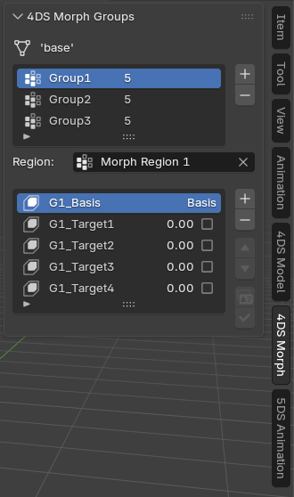
Morph data is organized into groups, each holding an ordered list of targets that map onto shape keys. The first target in a group is its basis, and it must name a shape key that exists on the mesh.
The + beside the target list makes a new shape key and adds it, built from the
mesh as it stands and named the way an import names them: the group’s basis first
(G1_Basis), then its targets (G1_Target1 and on). The button
under the pair, with the shape key icon, takes a key the mesh already carries instead,
picked from a list of the ones this group does not hold.
The − removes a target and its shape key: a target is the morph, and a key left behind is a shape nothing plays. A key another morph group still holds stays on the mesh — deleting it would empty a group that is in use — and the report says which. Removing the first target, the group’s basis, warns that the next one is the basis now and the rest are written against it.
- The basis occupies the first slot and cannot be moved out of it — the reorder arrows refuse any move that would displace it.
- Each target has a value slider for previewing.
- Groups shorter than the longest are padded with their own basis on export, since every region is written with the same target count.
- A vertex that moves in more than one group is assigned to whichever moved it most. The engine applies regions in order and the last write wins, so overlapping regions would otherwise let a later region's basis overwrite an earlier pose.
- Which vertices a group covers is not something to set. A group that came out of a file keeps the region the file listed for it, whether those vertices move or not; a group made here covers the vertices its own targets move. The panel says which of the two it is, and picking a group in the list brings its region up as the mesh’s active vertex group, so Blender’s own vertex group tools reach it.
- Per-target normals are stored alongside positions and preserved.
20Checks & messages
Errors stop the export before anything is written. Warnings let it through and tell you what changed.
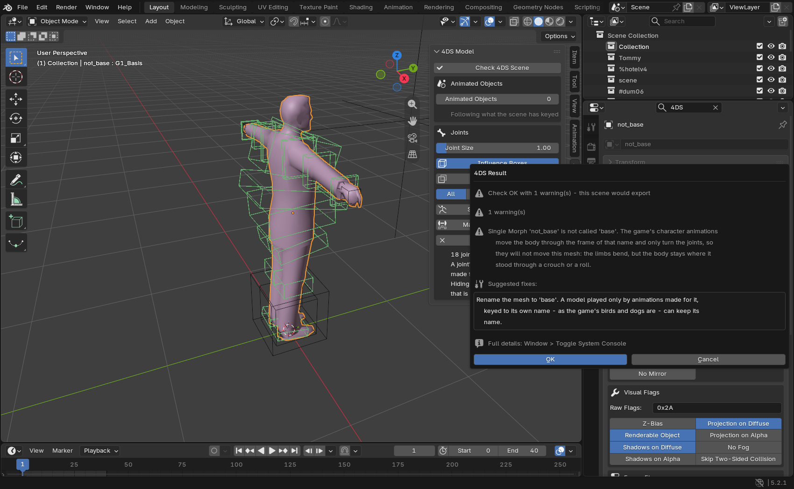
Errors — export stops
| Area | Condition |
|---|---|
| Sector | Fewer than 4 faces · not closed |
| Occluder | Not closed · not convex |
| Portal | Fewer than 3 corners · more than 8 |
| Mirror | No view box · more than one · not an empty · not cube display · not a direct child · has children |
| Armature | Moved, turned or scaled as an object · more than one skinned mesh · the mesh's share held in a joint's own vertex group · hung on a joint but moved off it |
| Skinned mesh | No geometry · not bound to an armature · no bone weights · shape keys on a Single Mesh · none on a Single Morph |
| Weights | More than two influences · unrelated bone pair · total over 1.0 · a two-bone vertex not totalling 1.0 |
| Morphs | Morph type with no groups · a group whose basis shape key is missing |
| Limits | Over 65,535 vertices, before or after UV and normal splitting |
Warnings — export continues
- A sector or occluder that is convex but has its normals the wrong way round.
- A sector that is not convex, with the room-containment consequence explained.
- A material with a texture assigned but the matching flag off, so the name would not be written.
- A gap in a LOD chain, and LOD levels that exist but are not exported.
- Target links dropped because the destination is not being exported.
- User properties clipped to 255 bytes.
- Auto-fix summaries when a weight repair ran.
- A Single Mesh or Single Morph not called base, which the game's character animations will not move.
- A character whose mesh frame sits more than 10 cm from Tommy's, at hip height, which every animation would carry the body off by.
On import
Import warnings describe repairs made to damaged data: faces referring to vertices outside the mesh, skin data covering a different vertex count than the mesh, textures that could not be opened, and bones Blender renamed. A face whose corners meet is not damage and is kept, the way Faces whose corners meet describes.
21The other references
Several pages sit beside this one, each on a subject of its own. They are written from the game's own behavior and checked against every model it ships. The User Guide is the way in: this manual is the reference it walks you through.
| Page | What is in it |
|---|---|
| User Guide | The path through all of it, in the order you meet it: installing, a tour, a first model, the checks, a prop with LODs, materials, a car, a character, animation and the rest. |
| Dummy names | Every frame name the game looks for — on vehicles, characters, weapons and in the city — what type each has to be, how a car is put together, and the names nothing reads. |
| User properties | Every piece of text a frame can carry, what reads it, what objects it belongs on, and every spelling found in the shipped files. |
| Flag usage | Which flag bits the game's own models actually use, and which are never set. |
| Joint viewer | Opens a 4DS in the browser and shows its joints, weights and influence boxes. |
22The pictures, and how to take them
Fifteen slots are set through the manual. Each shows
its caption until the file appears beside it, so the page reads either
way. Drop the files into a guide-images folder next to this
one, named exactly as below, and they show up.
Blender’s own Window › Save Screenshot catches the whole window; Save Screenshot (Editor) catches one editor, which is what most of these want. Use the default theme, keep the sidebar wide enough that no label is cut, and shoot at the size you read at — the page scales them down, not up.
| Figure | File | What to capture |
|---|---|---|
| 01 | guide-images/01-preferences.png | Edit › Preferences › Add-ons, this add-on expanded. The textures folder filled in with a real path, and both switches visible. |
| 02 | guide-images/02-import-dialog.png | File › Import › 4DS Mafia Model, with the options panel on the right open. Pick a folder with the game’s models so the file list is not empty. |
| 03 | guide-images/03-export-dialog.png | File › Export › 4DS Mafia Model, options panel open, a model loaded so the name field is filled. |
| 04 | guide-images/04-object-panel.png | Properties editor › Object tab › 4DS Object Properties, with a mesh selected. Typing 4DS in that editor's search box leaves only this add-on's panels on screen, which makes the cleanest picture. |
| 05 | guide-images/05-viewport-colors.png | Open a mission scene or a model with sectors, dummies and a mesh. Solid shading, Color set to Object. Frame the part where several colors meet. |
| 06 | guide-images/06-lod-list.png | Import a model that has LODs (most buildings do), select it, and show the LOD list in the 4DS Object panel with the distances in meters. |
| 07 | guide-images/07-material-panel.png | Select a color-keyed material (znpompeii is one) and show the material panel with the diffuse, alpha and environment boxes and the Draws as line. |
| 08 | guide-images/08-sector-portal.png | A mission scene, one sector and its portal selected, seen from inside the room so both outlines read. |
| 09 | guide-images/09-dummy-box.png | Select a dummy empty in the viewport so the handles appear; include the dot at the box’s middle and the dashed line to its empty, with the box off-center. |
| 10 | guide-images/10-joint-boxes.png | A character in Pose Mode with one joint selected, Influence Boxes on. Get the arrows, the rings and the six face handles in frame, and a box sitting off its joint so its dashed line shows. |
| 11 | guide-images/11-model-tab.png | Sidebar › 4DS Model with a character in the scene, so the joint count, the two box switches and the three buttons all show. |
| 12 | guide-images/12-weights.png | After Make Weights From Boxes, enter Weight Paint on the character and pick a thigh or a shoulder, where the blend zone is easy to see. |
| 13 | guide-images/13-animation-tab.png | Load a character and one of the game’s animations, then show the tab with the list, Make Active and Unload Animation. |
| 14 | guide-images/14-morph-groups.png | A character face model (Tommy’s head) with the 4DS Morph tab open and a group selected. |
| 15 | guide-images/15-check-report.png | Break something on purpose (rename a character’s mesh, or clear a joint’s box), press Check Scene, and capture the report. |